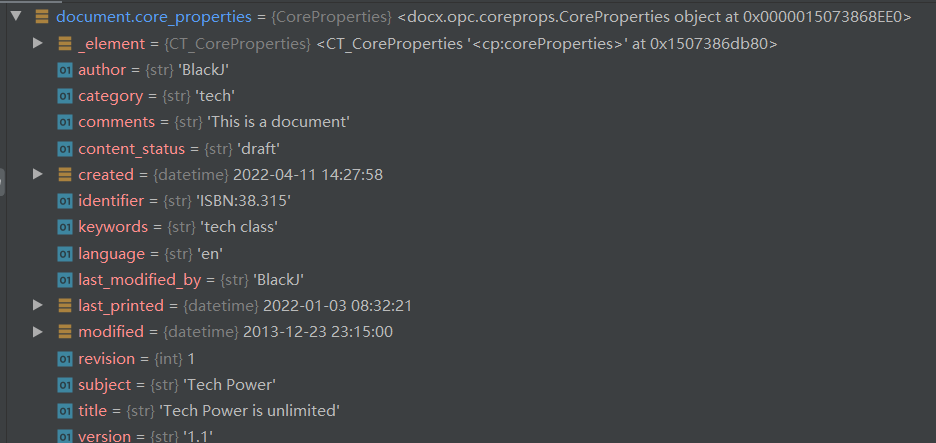
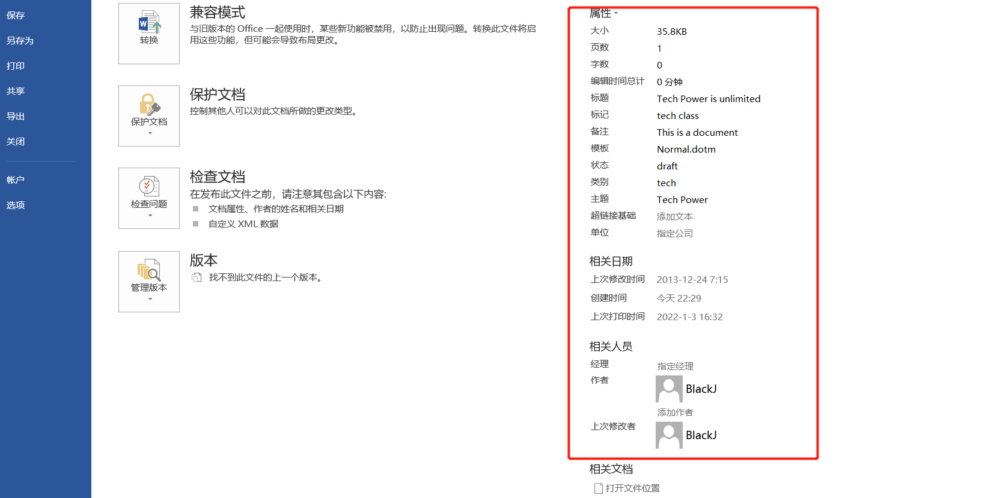
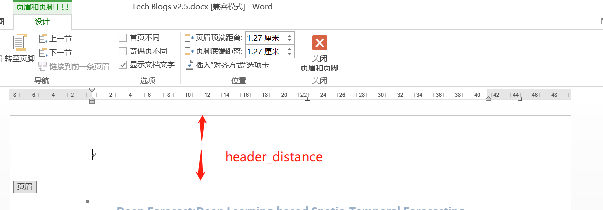
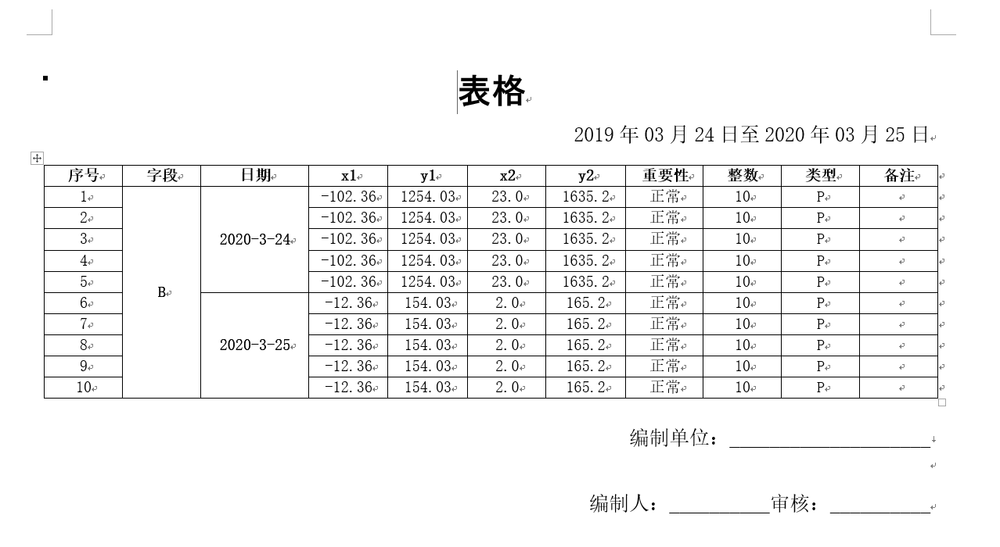

1.概述
在日常办公中，常用的软件就是office套件。针对office word、office excel和pdf的相关办公要求，python给出了相应的自动化处理的包，加速办公进程。
2.Word-docx库
在处理文档时，常用的是office word。在python的docx库中，提供了多种方法来对接office文档。
1
>>> pip install python-docx
1
2
3
4
5
6
>>> pip show python-docx
Name: python-docx
Version: 0.8.11
Summary: Create and update Microsoft Word .docx files.
Home-page: https://github.com/python-openxml/python-docx
...
2.1 创建docx文档
1
2
3
4
5
6
7
8
9
10
11
12
from docx import Document
document = Document()
document.save('test.docx')
# 打开文档（版本大于 Word 2007）
document = Document('existing-document-file.docx')
document.save('new-file-name.docx')
# 可以使用打开文件的方式打开docx文档
f = open('foobar.docx', 'rb')
document = Document(f)
f.close()
通过Document类实例化形成document对象，实例化后的对象拥有多个方法
| 方法 | 说明 |
|---|---|
add_heading(text=u’‘, level=1) | 添加标题、标题等级 |
add_page_break() | 添加分页符 |
add_paragraph(text=u’‘, style=None) | 添加一个段落、段落等级 |
add_picture(image_path_or_stream, width=None, height=None） | 添加图片 |
add_section(start_type=2) | 添加一个分区 |
add_table(rows, cols, style=None) | 添加表格、表格样式 |
save(path_or_stream) | 存储文档 |
| 核心属性（Document.core_properties.xxx) | 文档可读可写的核心属性 |
|---|---|
| author | 作者 |
| category | 文档类别 |
| comments | 文档说明 |
| content_status | 文档说明状态、如草稿 |
| created | 创建时间（datetime类型） |
| identifier | 标志符号，如ISBN |
| keywords | 文档关键词 |
| language | 文档语言 |
| last_modified_by | 最后修改人员 |
| last_printed | 最后打印时间（datetime类型） |
| modified | 最后修改时间（datetime类型） |
| revision | 修订次数（int类型） |
| subject | 文档主题 |
| title | 文档标题 |
| version | 版本号 |
1
2
3
4
5
6
7
8
9
10
11
12
13
14
15
16
17
18
19
20
21
22
from docx import Document
import datetime
document = Document()
document.core_properties.author = "BlackJ"
document.core_properties.category = "tech"
document.core_properties.comments = "This is a document"
document.core_properties.content_status = "draft"
document.core_properties.created = datetime.datetime.now()
document.core_properties.identifier = "ISBN:38.315"
document.core_properties.keywords = "tech class"
document.core_properties.language = "en"
document.core_properties.last_modified_by = "BlackJ"
document.core_properties.last_modified = datetime.datetime(2022, 1, 2, 9, 22, 11)
document.core_properties.last_printed = datetime.datetime(2022, 1, 3, 8, 32, 21)
document.core_properties.subject = "Tech Power"
document.core_properties.title = "Tech Power is unlimited"
document.core_properties.version = "1.1"
print(document.core_properties.category)
document.save("Tech Power.docx")


2.2 编辑文档
1
2
3
4
5
6
7
8
9
10
from docx import Document
new_doc = Document()
new_doc.add_heading(text="Tech Blogs")
new_doc.add_paragraph(
text=r'''The paper presents a spatio-temporal wind speed forecasting algorithm using Deep Learning (DL) and in particular, Recurrent Neural Networks(RNNs). Motivated by recent advances in renewable energy integration and smart grids, we apply our proposed algorithm for wind speed forecasting. Renewable energy resources (wind and solar)are random in nature and, thus, their integration is facilitated with accurate short-term forecasts.In our proposed framework, we model the spatiotemporal information by a graph whose nodes are data generating entities and its edges basically model how these nodes are interacting with each other. One of the main contributions of our work is the fact that we obtain forecasts of all nodes of the graph at the same time based on one framework. Results of a case study on recorded time series data from a collection of wind mills in the north-east of the U.S. show that the proposed DL-based forecasting algorithm significantly improves the short-term forecasts compared to a set of widely-used benchmarks models.''')
new_doc.add_picture('./source/EX01.png')
new_doc.add_section(2)
new_doc.add_table(3, 4)
new_doc.save("Tech Blogs v2.2.docx")
生成的文档属于一个素版的文档，没有修饰和格式，纯粹的堆砌而成。所以，在这个时候，需要了解下后面的样式的内容。
2.3 样式单位
样式在word文档中有着灵魂作用，包括对齐方式、颜色、字体大小等等。首先介绍一下尺寸方面和颜色方面的基本知识，这个模块集中在docx.shared模块中，主要包括长度（Length objects）和颜色（Length objects）。
1
2
from docx.shared import Inches,Cm,Pt,Mm
from docx.shared import RGBColor
Length objects | 说明 |
|---|---|
Inches | 英寸单位 width = Inches(0.5) |
Cm | 厘米单位 height = Cm(12) |
Mm | 毫米单位 width = Mm(240.5) |
Pt | 点单位 |
Twips | 缇，长度单位 width = Twips(42),A twip is a twentieth of a point, 635 EMU |
Emu | 英文width = Emu(457200)，1cm = 360000 EMU |
RGBColor objects | 表示方法 |
|---|---|
RGBColor | 三通道颜色表示 RGBColor(0xff, 0x99, 0xcc) |
RGBColor.from_string(*rgb_hex_str*) | 三通道字符表示RGBColor.from_string(3C2F80) |
2.4 样式格式
上一小节列举了样式的单位，这一节具体介绍样式格式的运用。在python-docx这个包中，有enumerations 模块，里面有Microsoft office的各种属性设置。
段落样式
对于段落样式，常见的就是对齐方式
1
2
3
4
from docx.enum.text import WD_ALIGN_PARAGRAPH
paragraph = document.add_paragraph()
paragraph.alignment = WD_ALIGN_PARAGRAPH.CENTER
| 对齐方式 | 说明 |
|---|---|
| LEFT | Left-aligned |
| CENTER | Center-aligned |
| RIGHT | Right-aligned |
| JUSTIFY | 两端对齐 |
| DISTRIBUTE | 分散对齐 |
| JUSTIFY_MED | 上下居中 |
| JUSTIFY_HI | 顶端对齐 |
| JUSTIFY_LOW | 底端对齐 |
| THAI_JUSTIFY | 泰式对齐 |
行间距
1
2
3
4
from docx.enum.text import WD_LINE_SPACING
paragraph = document.add_paragraph()
paragraph.paragraph_format.line_spacing_rule = WD_LINE_SPACING.EXACTLY
| 行间距 | 说明 |
|---|---|
| ONE_POINT_FIVE | 1.5倍行距 |
| AT_LEAST | 最小行距 |
| DOUBLE | 2倍行距 |
| EXACTLY | 固定行距 |
| MULTIPLE | 多倍行距 |
| SINGLE | 单倍行距 |
节（section）的概念
一个文档中，有多个节，通过获取节来进行本节（section）内的操作
1
2
3
4
5
6
7
8
9
10
11
12
13
14
15
16
17
18
19
20
21
22
23
>>> document = Document()
>>> sections = document.sections
>>> sections
<docx.parts.document.Sections object at 0x1deadbeef>
>>> len(sections)
3
>>> section = sections[0] #在section[0]中有奇偶页的设置属性
>>> section
<docx.section.Section object at 0x1deadbeef>
>>> for section in sections:
... print(section.start_type)
...
NEW_PAGE (2)
EVEN_PAGE (3)
ODD_PAGE (4)
# 添加新节
>>> current_section = document.sections[-1] # last section in document
>>> current_section.start_type
NEW_PAGE (2)
>>> new_section = document.add_section(WD_SECTION.ODD_PAGE)
>>> new_section.start_type
ODD_PAGE (4)

| 节的属性 | 说明 |
|---|---|
| start_type | 开始的类型 |
| orientation | 方向 |
| page_width | 页面宽度 |
| page_height | 页面高度 |
| left_margin | 文字到页面最左端的距离(页边距) |
| right_margin | 文字到页面最右端的距离 |
| top_margin | 文字到页面最上端的距离 |
| bottom_margin | 文字到页面最底端的距离 |
| header_distance | 页眉顶端距离 |
| footer_distance | 页脚底端距离 |
| gutter | 装订线位置 |
页眉和页脚
1
2
3
4
5
6
7
8
9
10
11
>>> document = Document()
>>> section = document.sections[0]
# 获取第一节的页眉
>>> header = section.header
>>> header.is_linked_to_previous = False # 不使用上节内容和样式
>>> document.settings.odd_and_even_pages_header_footer = True # 奇偶页不一样
>>> section.different_first_page_header_footer = True # 设置启动首页不同
>>> section.footer.paragraphs[0].alignment = WD_PARAGRAPH_ALIGNMENT.LEFT # 页脚左对齐
2.5 图片和表格
在2.2小节已经用到了插入图片和表格，本小节细化一下
1
2
3
4
5
6
7
8
9
from docx import Document
new_doc = Document()
new_doc.add_heading(text="Tech Blogs")
new_doc.add_picture('./source/EX01.png',width=Inches(1.25))
new_doc.add_table(3, 4，style='Medium Grid 1 Accent 1')
new_doc.save("Tech Blogs v2.2.docx")
1
2
3
4
5
6
7
8
# 查看docx中包含的表格样式
from docx.enum.style import WD_STYLE_TYPE
from docx import Document
d.=Document()
styles=d.styles
for s in styles:
if s.type==WD_STYLE_TYPE.TABLE:
print(s.name)
表格列宽
1. 可以使表格自动适应窗口大小:table.autofit=True 2. 设置列宽尺寸table.cell(row,col).width=Cm(4) 表格行高
- 设置行高尺寸
table.rows[0].height=Cm(12)
表格对齐方式
1
table.alignment=WD_TABLE_ALIGNMENT.CENTER|WD_TABLE_ALIGNMENT.LEFT|WD_TABLE_ALIGNMENT.RIGHT
合并单元格
1
2
# 在表格中每个单元格都有一个代码，cell(row,col)，row表示行号，col表示列号，从0开始计数
table.cell(row1,col1).merge(table.cell(row2,col2))
如果是cell(row1,col1)是cell(1,0）,cell(row2,col2)是cell(1,2)，那么合并的就是cell(1,0)、cell(1,1)、cell(1,2)三个单元格。
表格文字样式
1
2
3
4
5
# 表格中文字样式修改，与在段落中的样式修改一样，只是在添加文本时调用的方法不同。
run=table.cell(row,col).paragraphs[0].add_run(str) #添加文本的方法
run.font.name = u'宋体'
run._element.rPr.rFonts.set(qn('w:eastAsia'), u'宋体')
run.font.bold=True
表格文字对齐
1
2
3
4
# 水平对齐
table.cell(row,col).paragraphs[0].paragraph_format.alignment=WD_ALIGN_PARAGRAPH.CENTER |WD_ALIGN_PARAGRAPH.LEFT|WD_ALIGN_PARAGRAPH.RIGHT
# 垂直对齐
table.cell(1,1).vertical_alignment=WD_ALIGN_VERTICAL.CENTER |WD_ALIGN_VERTICAL.TOP|WD_ALIGN_VERTICAL.BOTTOM
综合案例

1
2
3
4
5
6
7
8
9
10
11
12
13
14
15
16
17
18
19
20
21
22
23
24
25
26
27
28
29
30
31
32
33
34
35
36
37
38
39
40
41
42
43
44
45
46
47
48
49
50
51
52
53
54
55
56
57
58
59
60
61
62
63
64
65
66
67
68
69
70
71
72
73
74
75
76
77
78
79
80
81
82
83
84
85
86
87
88
89
90
91
92
93
94
95
96
97
98
99
100
101
102
103
104
105
106
107
108
109
110
111
112
113
114
115
116
117
118
119
120
121
122
123
124
125
126
127
128
129
130
131
132
133
134
135
from docx import Document
from docx.shared import Cm, Pt
from docx.shared import RGBColor
from docx.enum.text import WD_PARAGRAPH_ALIGNMENT
from docx.oxml.ns import qn
from docx.enum.table import WD_TABLE_ALIGNMENT
'''
# 查看docx中包含的表格样式
from docx.enum.style import WD_STYLE_TYPE
from docx import Document
d = Document()
styles = d.styles
for s in styles:
if s.type == WD_STYLE_TYPE.TABLE:
print(s.name)
'''
# 首先创建一个文档对象
document = Document()
# 修改页面为横板
sections = document.sections
section = sections[0]
new_pagewidth, new_pageheight = section.page_height, section.page_width
section.page_height = new_pageheight
section.page_width = new_pagewidth
# 添加标题,并修改字体样式
head = document.add_heading(0)
run = head.add_run('表格')
run.font.name = u'黑体' # 设置字体为黑体
run.font.size = Pt(24) # 设置大小为24磅
run.font.color.rgb = RGBColor(0, 0, 0) # 设置颜色为黑色
head.alignment = WD_PARAGRAPH_ALIGNMENT.CENTER # 居中
# 添加子文档
p = document.add_paragraph()
run = p.add_run('2019年03月24日至2020年03月25日')
run.font.name = u'宋体'
run._element.rPr.rFonts.set(qn('w:eastAsia'), u'宋体')
run.font.size = Pt(14) # 设置大小为14磅
p.alignment = WD_PARAGRAPH_ALIGNMENT.RIGHT # 右对齐
# 表格操作
colss = 11 # 表格的总列数
table = document.add_table(rows=1, cols=colss, style='Table Grid')
table.alignment = WD_TABLE_ALIGNMENT.CENTER
# 表格标题行，并设置字体
hdr_cells = table.rows[0].cells
Fields = ['序号', '字段', '日期', 'x1', 'y1', 'x2', 'y2', '重要性', '整数', '类型', '备注']
for i in range(colss):
hdr_cells[i].paragraphs[0].paragraph_format.alignment = WD_PARAGRAPH_ALIGNMENT.CENTER
run = hdr_cells[i].paragraphs[0].add_run(Fields[i])
run.font.name = u'宋体'
run._element.rPr.rFonts.set(qn('w:eastAsia'), u'宋体')
run.font.bold = True
if i == 2:
hdr_cells[i].width = Cm(2.7)
# 写入表格数据
data = [
[1, 'B', '2020-03-04', -102.36, 1254.03, 23.00, 1635.2, "正常", 10, 'P', ''],
[2, 'B', '2020-03-04', -102.36, 1254.03, 23.00, 1635.2, "正常", 10, 'P', ''],
[3, 'B', '2020-03-04', -102.36, 1254.03, 23.00, 1635.2, "正常", 10, 'P', ''],
[4, 'B', '2020-03-04', -102.36, 1254.03, 23.00, 1635.2, "正常", 10, 'P', ''],
[5, 'B', '2020-03-04', -102.36, 1254.03, 23.00, 1635.2, "正常", 10, 'P', ''],
[6, 'B', '2020-03-25', -12.36, 154.03, 2.00, 165.2, "正常", 10, 'P', ''],
[7, 'B', '2020-03-25', -12.36, 154.03, 2.00, 165.2, "正常", 10, 'P', ''],
[8, 'B', '2020-03-25', -12.36, 154.03, 2.00, 165.2, "正常", 10, 'P', ''],
[9, 'B', '2020-03-25', -12.36, 154.03, 2.00, 165.2, "正常", 10, 'P', ''],
[10, 'B', '2020-03-25', -12.36, 154.03, 2.00, 165.2, "正常", 10, 'P', '']
]
for line in data:
row_cells = table.add_row().cells
for i, d in enumerate(line):
row_cells[i].paragraphs[0].paragraph_format.alignment = WD_PARAGRAPH_ALIGNMENT.CENTER
run = row_cells[i].paragraphs[0].add_run(str(d))
run.font.name = u'宋体'
run._element.rPr.rFonts.set(qn('w:eastAsia'), u'宋体')
# 合并第二列单元格
rowss = 10
table.cell(1, 1).merge(table.cell(rowss, 1))
table.cell(1, 1).text = ''
table.cell(1, 1).paragraphs[0].paragraph_format.alignment = WD_PARAGRAPH_ALIGNMENT.CENTER
run = table.cell(1, 1).paragraphs[0].add_run('B')
run.font.name = u'宋体'
run._element.rPr.rFonts.set(qn('w:eastAsia'), u'宋体')
table.cell(1, 1).vertical_alignment = WD_TABLE_ALIGNMENT.CENTER
# 合并第三列单元格
table.cell(1, 2).merge(table.cell(int(rowss / 2), 2))
table.cell(1, 2).text = ''
table.cell(1, 2).paragraphs[0].paragraph_format.alignment = WD_PARAGRAPH_ALIGNMENT.CENTER
run = table.cell(1, 2).paragraphs[0].add_run('2020-3-24')
run.font.name = u'宋体'
run._element.rPr.rFonts.set(qn('w:eastAsia'), u'宋体')
table.cell(1, 2).vertical_alignment = WD_TABLE_ALIGNMENT.CENTER
table.cell(int(rowss / 2 + 1), 2).merge(table.cell(rowss, 2))
table.cell(int(rowss / 2 + 1), 2).text = ''
table.cell(int(rowss / 2 + 1), 2).paragraphs[0].paragraph_format.alignment = WD_PARAGRAPH_ALIGNMENT.CENTER
run = table.cell(int(rowss / 2 + 1), 2).paragraphs[0].add_run('2020-3-25')
run.font.name = u'宋体'
run._element.rPr.rFonts.set(qn('w:eastAsia'), u'宋体')
table.cell(int(rowss / 2 + 1), 2).vertical_alignment = WD_TABLE_ALIGNMENT.CENTER
# 写入表格其他信息
p = document.add_paragraph()
run = p.add_run('编制单位：' + '_' * 20 + '\n')
run.font.name = u'宋体'
run._parent.paragraph_format.space_before = Pt(18) # 段前间距
run._element.rPr.rFonts.set(qn('w:eastAsia'), u'宋体')
run.font.size = Pt(14) # 设置大小为14磅
p.alignment = WD_PARAGRAPH_ALIGNMENT.RIGHT # 右对齐
p = document.add_paragraph()
run = p.add_run('编制人：' + '_' * 10 + '审核：' + '_' * 10)
run.font.name = u'宋体'
run._element.rPr.rFonts.set(qn('w:eastAsia'), u'宋体')
run.font.size = Pt(14) # 设置大小为14磅
p.alignment = WD_TABLE_ALIGNMENT.RIGHT # 右对齐
# 将文档保存到docx中
try:
document.save("Tech Blogs v2.5.docx")
print("Tech Blogs v2.5.docx文件已保存")
except:
print("文件被占用，请关闭后重试！")
2.6再次编辑文档
在加入了段落后，需要注意的是段落属性Paragraph properties,通过paragraph.paragraph_format可以访问。
分析一下，段落：即由字符组成句子，句子组成段落。
1
2
3
字符 --- 字体样式（加粗、倾斜、下滑线、删除线...）、字体大小、字体颜色
句子 --- 行距
段落 --- 段前段后间距、段落对齐方式、段落缩进方式
1
2
3
4
5
>>> from docx.enum.text import WD_ALIGN_PARAGRAPH
>>> from docx.shared import Inches
>>> document = Document()
>>> paragraph = document.add_paragraph()
>>> paragraph_format = paragraph.paragraph_format
水平对齐（Horizontal alignment (justification)）
1
2
3
>>> paragraph_format.alignment = WD_ALIGN_PARAGRAPH.CENTER
>>> paragraph_format.alignment
CENTER (1)
缩进（Indentation）
1
2
3
4
5
6
7
8
9
10
11
12
13
14
15
# 左缩进
>>> paragraph_format.left_indent = Inches(0.5)
>>> paragraph_format.left_indent
457200
# 右缩进
>>> paragraph_format.right_indent = Pt(24)
>>> paragraph_format.right_indent
304800
# 首行缩进
>>> paragraph_format.first_line_indent
None
>>> paragraph_format.first_line_indent = Inches(-0.25)
>>> paragraph_format.first_line_indent
-228600
精讲一下，一般在文档编辑的过程中，需要首行缩进2字符。但是，这个字符的大小是随着字体的大小变化而变化的，所以，需要设置或者找出字体的大小，然后乘以2即可。
1
2
3
#
p1.style.font.size = Pt(10.5)
p1.paragraph_format.first_line_indent = p1.style.font.size * 2
行距
行距通过两个属性来设定，行距line_spacing和行距规则line_spacing_rule，参考2.4小节的行间距规则。
1
2
3
4
5
6
7
8
9
10
11
12
13
14
15
16
17
18
19
20
21
>>> from docx.shared import Length
>>> paragraph_format.line_spacing
None
>>> paragraph_format.line_spacing_rule
None
# 设置固定行距，需要制定具体数值单位
>>> paragraph_format.line_spacing = Pt(18)
>>> isinstance(paragraph_format.line_spacing, Length)
True
>>> paragraph_format.line_spacing.pt
18.0
>>> paragraph_format.line_spacing_rule
EXACTLY (4)
# 设置多倍行距，直接写浮点数据
>>> paragraph_format.line_spacing = 1.75
>>> paragraph_format.line_spacing
1.75
>>> paragraph_format.line_spacing_rule
MULTIPLE (5)
段前段后间距（Paragraph spacing）
1
2
3
4
5
6
7
8
9
10
11
12
13
14
15
16
>>> paragraph_format.space_before, paragraph_format.space_after
(None, None) # inherited by default
>>> paragraph_format.space_before = Pt(18)
>>> paragraph_format.space_before.pt
18.0
>>> paragraph_format.space_after = Pt(12)
>>> paragraph_format.space_after.pt
12.0
# 在使用run等级的时候，需要用到_parent
p = document.add_paragraph()
run = p.add_run('编制单位：' + '_' * 20 + '\n')
run.font.name = u'宋体'
run._parent.paragraph_format.space_before = Pt(18) # 段前间距
分页属性(Pagination properties)
这个分页有点不太懂~
| 分页方式（布尔类型） | 说明 |
|---|---|
| keep_together | 整个段落归于后一页中；如果段落分跨两页，分页符在段首 |
| keep_with_next | 段落应与后续段落保持在同一页面上。例如，此属性可用于将节标题与其第一段保持在同一页上 |
| page_break_before | 段落前分页，使得被纸张分开的段落全部位于第二页上 |
| widow_control | 文档重排时，第一行与最后一行与段落均位于同一纸张 |
字符操作
字符操作通过run级别来实现。
1
2
3
4
5
6
7
8
9
10
11
12
13
14
15
16
17
18
19
20
21
22
23
24
25
26
27
28
29
30
31
32
33
34
35
36
37
38
39
40
41
42
43
44
>>> from docx import Document
>>> document = Document()
>>> run = document.add_paragraph().add_run()
# 访问运行的字体
>>> font = run.font
# 字体样式与大小设置
>>> from docx.shared import Pt
>>> font.name = 'Calibri'
>>> font.size = Pt(12)
# 字体加粗与倾斜
>>> font.bold, font.italic
(None, None)
>>> font.italic = True
>>> font.italic
True
>>> font.italic = False
>>> font.italic
False
>>> font.italic = None
>>> font.italic
None
# 下划线
>>> font.underline
None
>>> font.underline = True
>>> # or perhaps
>>> font.underline = WD_UNDERLINE.DOT_DASH
# 字体颜色
>>> from docx.shared import RGBColor
>>> font.color.rgb = RGBColor(0x42, 0x24, 0xE9)
# 示例第一段小标题
p1_0 = new_doc.add_paragraph()
p1_0.alignment = WD_PARAGRAPH_ALIGNMENT.LEFT
font_s = p1_0.add_run("Abstract")
font_s.font.bold = True
font_s.font.color.rgb = RGBColor(250, 0, 0)
# 设置主题颜色
>> from docx.enum.dml import MSO_THEME_COLOR
>>> font.color.theme_color = MSO_THEME_COLOR.ACCENT_1
1
2
3
4
5
6
# 示例
p0 = new_doc.add_paragraph()
p0.alignment = WD_PARAGRAPH_ALIGNMENT.CENTER
# 设置文字的样式，需要把文字写到run后面的文字中
font_s = p0.add_run(text="Amir Ghaderi Borhan M. Sanandaji Faezeh Ghaderi")
font_s.font.bold = True
明白上面的属性之后，开始写一段代码
1
2
3
4
5
6
7
8
9
10
11
12
13
14
15
16
17
18
19
20
21
22
23
24
25
26
27
28
29
30
31
32
33
34
35
36
37
38
39
40
41
42
43
44
45
46
47
48
49
50
51
52
53
54
55
56
57
58
59
60
61
62
63
64
65
66
67
68
69
70
71
72
73
74
75
76
77
from docx import Document
from docx.shared import Pt, RGBColor, Inches
from docx.enum.text import WD_PARAGRAPH_ALIGNMENT
new_doc = Document()
# 设置标题
head = new_doc.add_heading(text="Deep Forecast:Deep Learning-based Spatio-Temporal Forecasting")
head.alignment = WD_PARAGRAPH_ALIGNMENT.CENTER
# 设置作者
p0 = new_doc.add_paragraph()
p0.alignment = WD_PARAGRAPH_ALIGNMENT.CENTER
# 设置文字的样式，需要把文字写到run后面的文字中
font_s = p0.add_run(text="Amir Ghaderi Borhan M. Sanandaji Faezeh Ghaderi")
font_s.font.bold = True
# 第一段小标题
p1_0 = new_doc.add_paragraph()
p1_0.alignment = WD_PARAGRAPH_ALIGNMENT.LEFT
font_s = p1_0.add_run("Abstract")
font_s.font.bold = True
font_s.font.color.rgb = RGBColor(250, 0, 0)
# 第一段内容
p1 = new_doc.add_paragraph(
'The paper presents a spatio-temporal wind speed forecasting algorithm using Deep Learning (DL) and in particular, Recurrent Neural Networks(RNNs). Motivated by recent advances in renewable energy integration and smart grids, we apply our proposed algorithm for wind speed forecasting. Renewable energy resources (wind and solar)are random in nature and, thus, their integration is facilitated with accurate short-term forecasts.In our proposed framework, we model the spatiotemporal information by a graph whose nodes are data generating entities and its edges basically model how these nodes are interacting with each other. One of the main contributions of our work is the fact that we obtain forecasts of all nodes of the graph at the same time based on one framework. Results of a case study on recorded time series data from a collection of wind mills in the north-east of the U.S. show that the proposed DL-based forecasting algorithm significantly improves the short-term forecasts compared to a set of widely-used benchmarks models.')
p1.alignment = WD_PARAGRAPH_ALIGNMENT.LEFT
p1.style.font.size = Pt(10.5)
p1.paragraph_format.first_line_indent = p1.style.font.size * 2
# 第二段小标题
p2_0 = new_doc.add_paragraph()
p2_0.alignment = WD_PARAGRAPH_ALIGNMENT.LEFT
font_s = p2_0.add_run("1. Introduction")
font_s.font.bold = True
# 第二段内容
p2 = new_doc.add_paragraph('''Many countries in the world and many states in the U.S. have mandated aggressive Renewable Portfolio Standards (RPSs). Among different renewable energy resources, wind energy itself is expected to grow to provide between 15 to 25% of the world’s global electricity by 2050. According to another study, the world total wind power capacity has doubled every three years since 2000, reaching an installed capacity of 197 GW in 2010 and 369 GW in 2014 (CEC, 2013), (IEA, 2013). The random nature of wind, however, makes it difficult to achieve the power balance needed for its grid integration (Smith et al., 2007). The use of ancillary services such as frequency regulation and load following to compensate for such imbalances is facilitated by accurate forecasts (Hao et al., 2013), (Sanandaji et al., 2014). We present a spatio-temporal wind speed forecasting algorithm using Deep Learning (DL) and in particular, Recurrent Neural Networks (RNNs). In our proposed framework, we model the spatio-temporal information by a graph whose nodes are data generating entities and its edges model how these nodes are interacting with each other. One of the main contributions of our work is the fact that we obtain forecasts of all nodes of the graph at the same time and using one framework. One of the most important points is that we do not know the relationship between stations and the trained model determines which stations are more important to forecast one specific station. Our code and data are available at https://github.com/amirstar/Deep-Forecast One can directly attempt to forecast wind power. An alternative approach is to forecast the wind speed and then convert it to wind power using given power curves. This approach will accommodate different wind turbines installed in a wind farm experiencing the same wind speed profile but resulting in different wind power generation. We focus on wind speed forecasting in this paper. Wind speed forecasting methods can be categorized to different groups: (i) model-based methods such as Numerical Weather Prediction (NWP) vs. data-driven methods, (ii) point forecasting vs. probabilistic forecasting, and (iii) short-term forecasting vs. long-term forecasting. This paper is concerned with short-term point forecasting using both temporal data as well as spatial information. For a more complete survey of wind speed forecasting methods see (Zhu & Genton, 2012)
''')
p2.alignment = WD_PARAGRAPH_ALIGNMENT.LEFT
p2.paragraph_format.first_line_indent = p1.style.font.size * 2
# 第三段小标题
p3_0 = new_doc.add_paragraph()
p3_0.alignment = WD_PARAGRAPH_ALIGNMENT.LEFT
font_s = p3_0.add_run("2. Related works")
font_s.font.bold = True
# 第三段内容
p3 = new_doc.add_paragraph('''
Many countries in the world and many states in the U.S. have mandated aggressive Renewable Portfolio Standards (RPSs). Among different renewable energy resources, wind energy itself is expected to grow to provide between 15 to 25% of the world’s global electricity by 2050. According to another study, the world total wind power capacity has doubled every three years since 2000, reaching an installed capacity of 197 GW in 2010 and 369 GW in 2014 (CEC, 2013), (IEA, 2013). The random nature of wind, however, makes it difficult to achieve the power balance needed for its grid integration (Smith et al., 2007). The use of ancillary services such as frequency regulation and load following to compensate for such imbalances is facilitated by accurate forecasts (Hao et al., 2013), (Sanandaji et al., 2014). We present a spatio-temporal wind speed forecasting algorithm using Deep Learning (DL) and in particular, Recurrent Neural Networks (RNNs). In our proposed framework, we model the spatio-temporal information by a graph whose nodes are data generating entities and its edges model how these nodes are interacting with each other. One of the main contributions of our work is the fact that we obtain forecasts of all nodes of the graph at the same time and using one framework. One of the most important points is that we do not know the relationship between stations and the trained model determines which stations are more important to forecast one specific station. Our code and data are available at https://github.com/amirstar/Deep-Forecast One can directly attempt to forecast wind power. An alternative approach is to forecast the wind speed and then convert it to wind power using given power curves. This approach will accommodate different wind turbines installed in a wind farm experiencing the same wind speed profile but resulting in different wind power generation. We focus on wind speed forecasting in this paper. Wind speed forecasting methods can be categorized to different groups: (i) model-based methods such as Numerical Weather Prediction (NWP) vs. data-driven methods, (ii) point forecasting vs. probabilistic forecasting, and (iii) short-term forecasting vs. long-term forecasting. This paper is concerned with short-term point forecasting using both temporal data as well as spatial information. For a more complete survey of wind speed forecasting methods see (Zhu & Genton, 2012)
Many countries in the world and many states in the U.S. have mandated aggressive Renewable Portfolio Standards (RPSs). Among different renewable energy resources, wind energy itself is expected to grow to provide between 15 to 25% of the world’s global electricity by 2050. According to another study, the world total wind power capacity has doubled every three years since 2000, reaching an installed capacity of 197 GW in 2010 and 369 GW in 2014 (CEC, 2013), (IEA, 2013). The random nature of wind, however, makes it difficult to achieve the power balance needed for its grid integration (Smith et al., 2007). The use of ancillary services such as frequency regulation and load following to compensate for such imbalances is facilitated by accurate forecasts (Hao et al., 2013), (Sanandaji et al., 2014). We present a spatio-temporal wind speed forecasting algorithm using Deep Learning (DL) and in particular, Recurrent Neural Networks (RNNs). In our proposed framework, we model the spatio-temporal information by a graph whose nodes are data generating entities and its edges model how these nodes are interacting with each other. One of the main contributions of our work is the fact that we obtain forecasts of all nodes of the graph at the same time and using one framework. One of the most important points is that we do not know the relationship between stations and the trained model determines which stations are more important to forecast one specific station. Our code and data are available at https://github.com/amirstar/Deep-Forecast One can directly attempt to forecast wind power. An alternative approach is to forecast the wind speed and then convert it to wind power using given power curves. This approach will accommodate different wind turbines installed in a wind farm experiencing the same wind speed profile but resulting in different wind power generation. We focus on wind speed forecasting in this paper. Wind speed forecasting methods can be categorized to different groups: (i) model-based methods such as Numerical Weather Prediction (NWP) vs. data-driven methods, (ii) point forecasting vs. probabilistic forecasting, and (iii) short-term forecasting vs. long-term forecasting. This paper is concerned with short-term point forecasting using both temporal data as well as spatial information. For a more complete survey of wind speed forecasting methods see (Zhu & Genton, 2012)
Many countries in the world and many states in the U.S. have mandated aggressive Renewable Portfolio Standards (RPSs). Among different renewable energy resources, wind energy itself is expected to grow to provide between 15 to 25% of the world’s global electricity by 2050. According to another study, the world total wind power capacity has doubled every three years since 2000, reaching an installed capacity of 197 GW in 2010 and 369 GW in 2014 (CEC, 2013), (IEA, 2013). The random nature of wind, however, makes it difficult to achieve the power balance needed for its grid integration (Smith et al., 2007). The use of ancillary services such as frequency regulation and load following to compensate for such imbalances is facilitated by accurate forecasts (Hao et al., 2013), (Sanandaji et al., 2014). We present a spatio-temporal wind speed forecasting algorithm using Deep Learning (DL) and in particular, Recurrent Neural Networks (RNNs). In our proposed framework, we model the spatio-temporal information by a graph whose nodes are data generating entities and its edges model how these nodes are interacting with each other. One of the main contributions of our work is the fact that we obtain forecasts of all nodes of the graph at the same time and using one framework. One of the most important points is that we do not know the relationship between stations and the trained model determines which stations are more important to forecast one specific station. Our code and data are available at https://github.com/amirstar/Deep-Forecast One can directly attempt to forecast wind power. An alternative approach is to forecast the wind speed and then convert it to wind power using given power curves. This approach will accommodate different wind turbines installed in a wind farm experiencing the same wind speed profile but resulting in different wind power generation. We focus on wind speed forecasting in this paper. Wind speed forecasting methods can be categorized to different groups: (i) model-based methods such as Numerical Weather Prediction (NWP) vs. data-driven methods, (ii) point forecasting vs. probabilistic forecasting, and (iii) short-term forecasting vs. long-term forecasting. This paper is concerned with short-term point forecasting using both temporal data as well as spatial information. For a more complete survey of wind speed forecasting methods see (Zhu & Genton, 2012)
Many countries in the world and many states in the U.S. have mandated aggressive Renewable Portfolio Standards (RPSs). Among different renewable energy resources, wind energy itself is expected to grow to provide between 15 to 25% of the world’s global electricity by 2050. According to another study, the world total wind power capacity has doubled every three years since 2000, reaching an installed capacity of 197 GW in 2010 and 369 GW in 2014 (CEC, 2013), (IEA, 2013). The random nature of wind, however, makes it difficult to achieve the power balance needed for its grid integration (Smith et al., 2007). The use of ancillary services such as frequency regulation and load following to compensate for such imbalances is facilitated by accurate forecasts (Hao et al., 2013), (Sanandaji et al., 2014). We present a spatio-temporal wind speed forecasting algorithm using Deep Learning (DL) and in particular, Recurrent Neural Networks (RNNs). In our proposed framework, we model the spatio-temporal information by a graph whose nodes are data generating entities and its edges model how these nodes are interacting with each other. One of the main contributions of our work is the fact that we obtain forecasts of all nodes of the graph at the same time and using one framework. One of the most important points is that we do not know the relationship between stations and the trained model determines which stations are more important to forecast one specific station. Our code and data are available at https://github.com/amirstar/Deep-Forecast One can directly attempt to forecast wind power. An alternative approach is to forecast the wind speed and then convert it to wind power using given power curves. This approach will accommodate different wind turbines installed in a wind farm experiencing the same wind speed profile but resulting in different wind power generation. We focus on wind speed forecasting in this paper. Wind speed forecasting methods can be categorized to different groups: (i) model-based methods such as Numerical Weather Prediction (NWP) vs. data-driven methods, (ii) point forecasting vs. probabilistic forecasting, and (iii) short-term forecasting vs. long-term forecasting. This paper is concerned with short-term point forecasting using both temporal data as well as spatial information. For a more complete survey of wind speed forecasting methods see (Zhu & Genton, 2012)
''')
p3.alignment = WD_PARAGRAPH_ALIGNMENT.LEFT
p3.paragraph_format.first_line_indent = p1.style.font.size * 2
# 设置页眉
header = new_doc.sections[0].header.paragraphs[0]
header.add_run('Deep Forecast: Deep Learning-based Spatio-Temporal Forecasting')
header.alignment = WD_PARAGRAPH_ALIGNMENT.CENTER
new_doc.settings.odd_and_even_pages_header_footer = True
# 设置偶数页页眉
section = new_doc.sections[0]
even_page_header = section.even_page_header # 获取偶数页
even_page_run = even_page_header.paragraphs[0].add_run('Tech Blogs')
even_page_run.font.size = Pt(18) # 设置偶数页页眉大小
even_page_header.paragraphs[0].alignment = WD_PARAGRAPH_ALIGNMENT.RIGHT
# 设置页脚
# todo 不清楚如何添加页码
footer_page = section.footer.paragraphs[0]
footer_page.add_run('Study hard and make progress everyday!')
footer_page.alignment = WD_PARAGRAPH_ALIGNMENT.CENTER
even_page_footer_run = section.even_page_footer.paragraphs[0]
even_page_footer_run.add_run('Knowledge is power')
even_page_footer_run.alignment = WD_PARAGRAPH_ALIGNMENT.CENTER
new_doc.save("Tech Blogs v2.6.docx")
参考链接：
1. python-docx — python-docx 0.8.11 documentation
2.浅谈python-docx的缩进问题——如何缩进两个字符
3.python-docx设置页眉和页脚 (baidu.com)